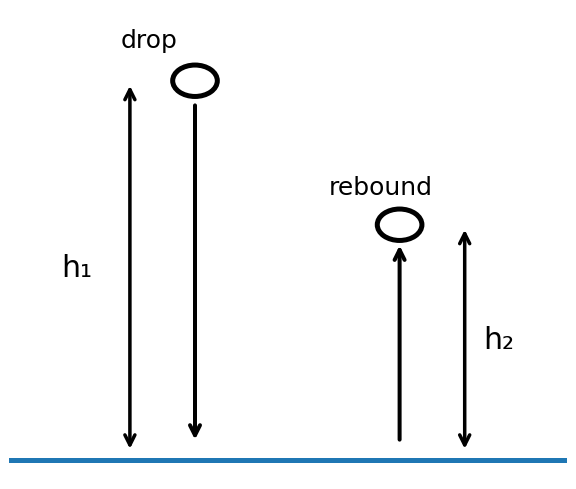

Principle of conservation of energy
In AP Physics 1 mechanics, our quantitative energy toolkit is mainly:
Translational kinetic energy
Change in gravitational potential energy when g is approximately constant
General gravitational potential energy
Ideal spring potential energy
Change in internal energy used as bookkeeping when mechanical energy is dissipated
Throughout this lesson use g = 9.8 m s⁻².
Identify the main energy transfer
For each event, choose the main starting and finishing energy type. The dropdowns deliberately contain all nine GREENSICK forms.
Reveal explanation
Gravitational → Kinetic. For a small dense ball, air resistance is small enough that the main transfer is gravitational potential energy to kinetic energy.
Reveal explanation
Kinetic → Gravitational. The car loses kinetic energy while the car-Earth system gains gravitational potential energy. Small losses to internal energy are ignored in this main-transfer model.
Reveal explanation
Gravitational → Internal. Its speed is constant, so its kinetic energy is not changing. The decrease in gravitational potential energy is transferred mainly to internal energy in the lift/motor/braking system.
Reveal explanation
Elastic → Kinetic. Spring potential energy decreases while the cart gains kinetic energy.
Reveal explanation
Kinetic → Internal. The bicycle-rider system loses kinetic energy and the brakes/tyres/surroundings gain internal energy.
Reveal explanation
Kinetic → Elastic. During the compression phase, much of the ball’s kinetic energy is temporarily stored as elastic potential energy. Some also becomes internal energy and sound.
Simple use of conservation of energy
A. Lightbulb
A 100 W lightbulb converts 100 J of electrical energy each second. If 75 J becomes internal energy each second, what other energy change can be deduced?
Worked answer
Equation: Eelectrical = ΔUint + Eradiation
Substitution: 100 J = 75 J + Eradiation
Answer: Eradiation = 25 J each second.
B. Falling ball
A ball loses 250 J of gravitational potential energy and gains 200 J of kinetic energy. Suggest what else has occurred.
Worked answer
Equation: |ΔUg| = ΔK + Eother
Substitution: 250 J = 200 J + Eother
Answer: Eother = 50 J, transferred mainly to internal energy (and possibly some sound).
C. Elastic band
A stretched elastic band is released vertically upward. At the highest point the object has gained 25 J of gravitational potential energy. Neglect energy losses. What can you deduce about the elastic potential energy stored initially?
Worked answer
Equation: Us,i + Ki = Ug,f + Kf
At release and at maximum height, Ki = Kf = 0.
Reduced equation: Us,i = ΔUg
Substitution: Us,i = 25 J
Answer: the initial elastic potential energy was 25 J.
Problem solving with gravitational and kinetic energy
A 28 g ball falls from rest from a table 78 cm high. Use SI units and give final numerical answers to 2 significant figures.
- Determine Δy with the correct sign.
- Determine ΔUg with the correct sign.
- Explain what that sign means physically.
- Use a kinematics equation to determine the speed just before impact.
- Determine the kinetic energy just before impact.
- Has the ball gained or lost kinetic energy?
Hints
Convert 28 g to kg and 78 cm to m. Take upward as positive, so Δy is negative.
Worked solution
m = 0.028 kg and Δy = −0.78 m.
Equation: ΔUg = mgΔy
Substitution: ΔUg = (0.028)(9.8)(−0.78)
Answer: ΔUg = −0.21 J. The negative sign means the gravitational potential energy of the ball–Earth system decreases.
Equation: v² = v0² + 2aΔy
Substitution: v² = 0 + 2(−9.8)(−0.78)
Answer: v = 3.9 m s⁻¹.
Equation: K = ½mv²
Substitution: K = ½(0.028)(3.91²)
Answer: K = 0.21 J. The ball gains 0.21 J of kinetic energy.
The before-and-after method
For each problem in the rest of this lesson, start by writing an energy statement. A useful template is:
Cross out terms that are zero or unchanged. This is an accounting method, not a new equation to memorize.
Practical: a bouncing ball

Equipment: bouncy ball, mass balance, metre stick, stopwatch.
Method
- Measure the ball mass m.
- Choose and measure a drop height h₁.
- Release the ball from rest without pushing it.
- Estimate the maximum first rebound height h₂. Repeat at least five times and average.
- Optional cross-check: measure the time between first and second floor impacts. Treat this only as a rough check because of reaction-time uncertainty.
Quantify the energy
Equation: Ug,i = mgh₁
Equation: Ug,rebound = mgh₂
Equation: ΔEmech,not recovered ≈ mg(h₁ − h₂)
The unrecovered mechanical energy is transferred mainly to internal energy of the ball/floor, plus sound and small air-resistance losses.
Equation: percentage mechanically recovered ≈ 100 × h₂/h₁
Discussion prompts
- Where does the unrecovered mechanical energy go?
- Why is the result not exactly reproducible?
- Which measurement contributes most uncertainty?
Compare Force & Motion with Energy
A. Block on a frictionless incline

A 1.2 kg block starts from rest. It moves 0.50 m down a frictionless incline while dropping vertically by 0.30 m.
- Determine the incline angle.
- Determine Fg,∥, the component of the gravitational force parallel to the plane.
- Determine the acceleration.
- Use kinematics to determine the speed after moving 0.50 m.
- Determine ΔUg.
- Determine K at the same instant.
Worked solution
Equation: sinθ = opposite/hypotenuse
Substitution: sinθ = 0.30/0.50 = 0.60
Answer: θ = 36.9°.
Equation: Fg,∥ = Fgsinθ = mg sinθ
Substitution: Fg,∥ = (1.2)(9.8)(0.60)
Answer: Fg,∥ = 7.1 N.
Equation: ΣF∥ = Fnet = ma
Substitution: 7.056 = (1.2)a
Answer: a = 5.9 m s⁻².
Equation: v² = v0² + 2aΔx
Substitution: v² = 0 + 2(5.88)(0.50)
Answer: v = 2.4 m s⁻¹.
Equation: ΔUg = mgΔy
Substitution: ΔUg = (1.2)(9.8)(−0.30)
Answer: ΔUg = −3.5 J.
Equation: K = ½mv²
Substitution: K = ½(1.2)(2.425²)
Answer: K = 3.5 J.
B. Projectile launched from a building

A 0.25 kg ball is launched at 15 m s⁻¹, 30° above horizontal, from a building 12 m high. Air resistance is negligible.
- Find the initial horizontal and vertical velocity components.
- Use kinematics to find the rise above the roof.
- Find the initial K.
- At the top, find the horizontal velocity, speed and K.
- Find ΔK and ΔUg from launch to the highest point.
- Find ΔUg from roof to ground.
- Use conservation of energy to find impact speed.
Worked solution
Equation: vx,0 = v0cosθ
Substitution: 15cos30°
Answer: vx,0 = 13.0 m s⁻¹.
Equation: vy,0 = v0sinθ
Substitution: 15sin30°
Answer: vy,0 = 7.5 m s⁻¹.
Equation: vy² = vy,0² + 2ayΔy
Substitution: 0 = 7.5² − 2(9.8)Δy
Answer: Δy = 2.87 m.
Equation: K = ½mv²
Substitution: Ki = ½(0.25)(15²)
Answer: Ki = 28.1 J.
At maximum height vy = 0 and vx = 13.0 m s⁻¹, so v = 13.0 m s⁻¹.
Equation: K = ½mv²
Substitution: Ktop = ½(0.25)(13.0²)
Answer: Ktop = 21.1 J.
Equation: ΔK = Kf − Ki
Substitution: 21.1 − 28.1
Answer: ΔK = −7.0 J.
Equation: ΔUg = mgΔy
Substitution: (0.25)(9.8)(2.87)
Answer: ΔUg = +7.0 J.
Equation: ΔUg = mgΔy
Substitution: (0.25)(9.8)(−12)
Answer: ΔUg = −29.4 J.
Equation: Ki + Ug,i = Kf + Ug,f
Choose ground level as Ug,f = 0. Then Kf = 28.1 + 29.4 = 57.5 J.
Equation: K = ½mv²
Rearranged: v = √(2K/m)
Substitution: v = √[2(57.5)/0.25]
Answer: v = 21.5 m s⁻¹.
Explore gravitational potential energy further
Near Earth’s surface we usually use ΔUg = mgΔy. Over very large distances, g changes significantly, so use the AP general gravitational-potential equation:
The zero is defined at infinite separation. A bound gravitational system therefore has negative UG.
Take Earth’s mass as 5.98 × 10²⁴ kg, Earth’s radius as 6380 km, and your mass as 65 kg.
- Find UG at Earth’s surface.
- Find UG at 2 Earth radii from Earth’s centre.
- Find the increase in gravitational potential energy.
- Find the energy required to escape to infinity.
- Now incorrectly assume g stays 9.8 m s⁻² while you rise by 6380 km. Calculate ΔUg = mgΔy and comment.
Worked solution
Equation: UG = −Gm₁m₂/r
Substitution at r = RE: UG = −[(6.67×10⁻¹¹)(5.98×10²⁴)(65)]/(6.38×10⁶)
Answer: UG = −4.1 × 10⁹ J.
Equation: UG = −Gm₁m₂/r
At r = 2RE: UG = −2.0 × 10⁹ J.
Equation: ΔUG = UG,f − UG,i
Answer: ΔUG = +2.0 × 10⁹ J.
At infinity UG,f = 0, so the energy required to escape is 4.1 × 10⁹ J.
Equation used outside its valid range: ΔUg = mgΔy
Substitution: (65)(9.8)(6.38×10⁶)
Answer: ≈ 4.1 × 10⁹ J, roughly twice the correct increase to 2RE, because g decreases substantially with altitude.
Dropping a ball with drag
A 520 g ball falls from rest through 14 m.
- Find the magnitude of the decrease in gravitational potential energy.
- If all of it becomes kinetic energy, find K and the speed.
- Instead suppose half of the lost gravitational potential energy becomes internal energy. Find the final speed.
- Assume acceleration was constant. Find the acceleration.
- Use force analysis to find the air-resistance force.
Worked solution
m = 0.520 kg.
Equation: |ΔUg| = mgh
Substitution: (0.520)(9.8)(14)
Answer: |ΔUg| = 71 J.
Equation: |ΔUg| = ΔK
Answer: Kf = 71 J.
Equation: K = ½mv²
Rearranged: v = √(2K/m)
Answer: v = 17 m s⁻¹.
If half is transferred to internal energy:
Equation: |ΔUg| = Kf + ΔUint
Substitution: Kf = 0.50(71.3) = 35.7 J
Equation: K = ½mv²
Rearranged: v = √(2K/m)
Answer: v = 12 m s⁻¹.
Equation: v² = v0² + 2aΔx
Substitution: 11.7² = 0 + 2a(14)
Answer: a = 4.9 m s⁻² downward.
Take downward as positive.
Equation: ΣF = Fnet = ma
Force equation: Fg − Fdrag = ma
Substitution: (0.520)(9.8) − Fdrag = (0.520)(4.9)
Answer: Fdrag = 2.5 N upward.
Generalise by deriving an equation
An object of mass M starts from rest and falls through vertical height H. Ignore air resistance. Use conservation of energy to derive its final speed.
Worked derivation
Equation: Ki + Ug,i = Kf + Ug,f
Choose Ug,f = 0 and note Ki = 0.
Substitution in symbols: MgH = ½Mv²
Mass cancels, so v = √(2gH).
Now the same object begins with downward speed v0. Derive its speed after falling through H.
Worked derivation
Equation: Ki + Ug,i = Kf + Ug,f
Substitution in symbols: ½Mv0² + MgH = ½Mv²
Result: v² = v0² + 2gH, so v = √(v0² + 2gH).
Projectiles using conservation of energy
1. Horizontal launch
A 2.5 kg object is projected horizontally at 5.0 m s⁻¹ from a building 12 m high. Ignore air resistance.
- Find the initial K.
- Find the decrease in Ug and hence the increase in K.
- Find the final K and impact speed.
Worked solution
Equation: K = ½mv²
Substitution: Ki = ½(2.5)(5.0²)
Answer: Ki = 31 J.
Equation: ΔUg = mgΔy
Substitution: (2.5)(9.8)(−12)
Answer: ΔUg = −294 J.
Equation: ΔK + ΔUg = 0
Answer: ΔK = +294 J, so Kf = 325 J.
Equation: K = ½mv²
Rearranged: v = √(2K/m)
Answer: v = 16 m s⁻¹.
2. Generalise
For mass M, initial horizontal speed v0, and building height H, derive the impact speed.
Worked derivation
Equation: Ki + Ug,i = Kf + Ug,f
Substitution in symbols: ½Mv0² + MgH = ½Mv²
Result: v = √(v0² + 2gH).
3. Angled projectile
A 0.500 kg object is projected from ground level at 12 m s⁻¹, 60° above horizontal.
- Find initial K.
- Find the horizontal velocity component.
- State how that component changes in flight.
- At the highest point, state the vertical velocity and find K.
- Find the kinetic energy lost and gravitational potential energy gained.
- Find the maximum vertical height.
Worked solution
Equation: K = ½mv²
Substitution: ½(0.500)(12²)
Answer: Ki = 36 J.
Equation: vx = v0cosθ
Substitution: 12cos60°
Answer: vx = 6.0 m s⁻¹, constant throughout flight because ax = 0.
At the top vy = 0, so v = 6.0 m s⁻¹.
Equation: K = ½mv²
Substitution: ½(0.500)(6.0²)
Answer: Ktop = 9.0 J.
Equation: ΔK + ΔUg = 0
Substitution: ΔK = 9.0 − 36 = −27 J
Answer: ΔUg = +27 J.
Equation: ΔUg = mgΔy
Substitution: 27 = (0.500)(9.8)h
Answer: h = 5.5 m.
Inclined planes: dynamics or energy?

A 2.0 kg block starts from rest on a frictionless 30° incline and moves 0.40 m down the slope.
A. Force & motion
- Find Fg,∥.
- Find acceleration.
- Find final speed.
B. Conservation of energy
- Find vertical drop h.
- Find final K.
- Find final speed.
Worked solution
Equation: Fg,∥ = Fgsinθ = mg sinθ
Substitution: (2.0)(9.8)sin30°
Answer: Fg,∥ = 9.8 N.
Equation: ΣF∥ = Fnet = ma
Substitution: 9.8 = (2.0)a
Answer: a = 4.9 m s⁻².
Equation: v² = v0² + 2aΔx
Substitution: v² = 0 + 2(4.9)(0.40)
Answer: v = 2.0 m s⁻¹.
Equation: h = d sinθ
Substitution: h = 0.40sin30°
Answer: h = 0.20 m.
Equation: Ki + Ug,i = Kf + Ug,f
Choose Ug,f = 0 and Ki = 0, so Kf = mgh.
Substitution: (2.0)(9.8)(0.20)
Answer: Kf = 3.92 J.
Equation: K = ½mv²
Rearranged: v = √(2K/m)
Answer: v = 2.0 m s⁻¹.
C. Generalise
For mass M, incline angle θ and distance d down a frictionless plane, derive h, the gravitational-energy decrease, and final speed.
Worked derivation
Equation: h = d sinθ
Equation: Ki + Ug,i = Kf + Ug,f
With Ki = 0 and Ug,f = 0: Mgd sinθ = ½Mv².
Result: v = √(2gd sinθ). Mass cancels.
Challenge algebra problem: rough inclined plane
A block of mass m starts from rest and slides down a rough plane inclined at θ. Its vertical height drop is h and the coefficient of kinetic friction is μk. The acceleration is down the plane. Derive expressions using only m, θ, h, μk and g.
- Distance d moved along the plane.
- Normal force Fn.
- Kinetic-friction force Ff.
- Net force Fnet down the plane.
- Acceleration.
- Final speed.
- Final kinetic energy.
- Change in gravitational potential energy ΔUg.
- Increase in internal energy ΔUint.
Hints
Use sinθ = h/d. Perpendicular to the plane, acceleration is zero, so begin with ΣF⊥ = 0. Then use Ff = μkFn.
Worked derivation
(a) Equation: sinθ = h/d
Result: d = h/sinθ.
(b) Equation: ΣF⊥ = 0
Force equation: Fn − Fgcosθ = 0
Result: Fn = mg cosθ.
(c) Equation: Ff = μkFn
Result: Ff = μkmg cosθ.
(d) Equation: ΣF∥ = Fnet
Force equation: Fnet = Fgsinθ − Ff
Result: Fnet = mg(sinθ − μkcosθ).
(e) Equation: Fnet = ma
Result: a = g(sinθ − μkcosθ).
(f) Equation: v² = v0² + 2aΔx
Substitution in symbols: v² = 2[g(sinθ − μkcosθ)](h/sinθ)
Result: v = √[2gh(1 − μkcotθ)].
(g) Equation: K = ½mv²
Result: Kf = mgh(1 − μkcotθ).
(h) Equation: ΔUg = mgΔy
Result: ΔUg = −mgh.
(i) Equation: Ki + Ug,i + Uint,i = Kf + Ug,f + Uint,f
With Ki = 0 and Ug,f = 0: mgh = Kf + ΔUint.
Result: ΔUint = μkmgh cotθ.
End-of-lesson check
- Can I identify the main energy transfer before doing any calculation?
- Can I write total energy before = total energy after and remove zero/unchanged terms?
- Can I distinguish a change ΔUg near Earth from the general Ug equation?
- Can I explain where “missing” mechanical energy has gone without saying energy was destroyed?
- Can I choose whether force-and-motion or conservation of energy is the cleaner route?